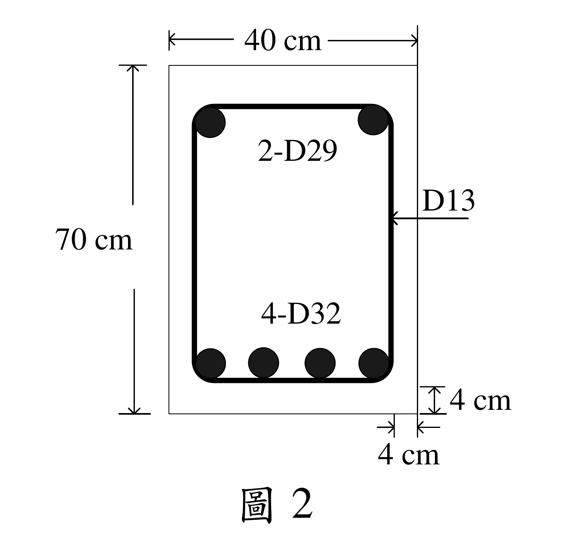
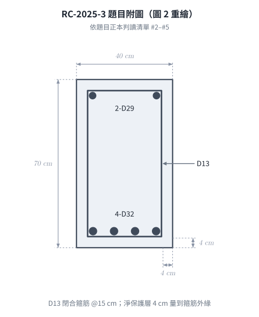
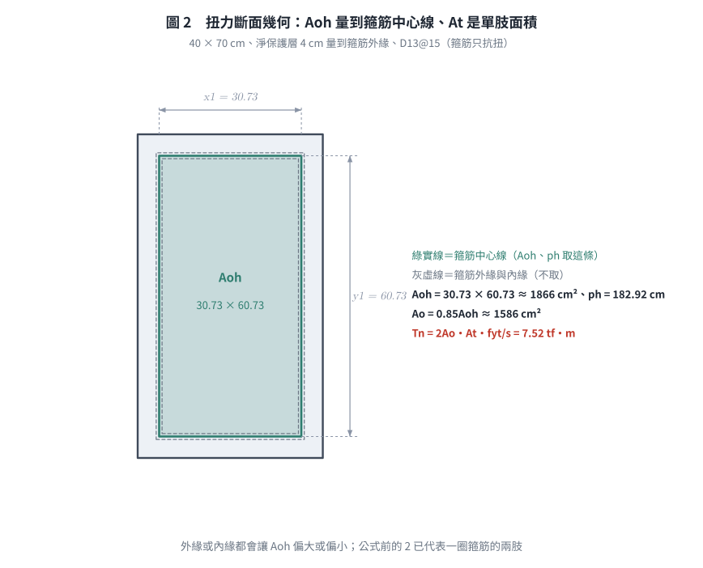

📄 題目正本：考卷原文・附圖・判讀清單（已確認）
RC-2025-3 題目正本
本檔只記錄考卷上寫了什麼、圖上畫了什麼，不含任何解法。解析見同資料夾
RC-2025-3.md。
判讀清單已經使用者確認（凍結）；本檔原則上不再修改（改動須回考卷原圖並記 log）。
| 項目 | 內容 |
|---|---|
| 考卷 | raw/exams/RC-2025_鋼筋混凝土設計與預力.pdf 第 2 頁，第三題 |
| 考年 | 民國 114 年（2025） |
| 配分 | 25 分 |
| 附圖 | RC-2025-3-fig-2.png（圖 2：梁斷面；2026-11-15 由考卷重新擷取 500 dpi）；既有 RC-2025-3-fig-1.png 為同一圖，圖左下空白處有滑鼠游標，保留不刪 |
| 判讀狀態 | 已確認（2026-11-15 使用者確認；轉錄 2026-11-15；PyMuPDF 110 dpi 全頁目視，附圖 450 dpi 局部放大；尺寸文字以 PDF 文字座標核對；盲讀後才比對既有解析） |
1. 考卷原文（逐字）
三、一鋼筋混凝土矩形梁斷面（如圖 2），配置下層 4 支 D32 拉力筋，上層 2 支 D29 壓力筋，閉合箍筋使用 D13，間距 15 cm，淨保護層為 4 cm。若箍筋僅用於抵抗扭矩，試求此斷面之扭矩強度 $T_n$ (tf-m)。（25 分）
2. 考卷給的公式、附表與參數
- 卷首依據與作答規範：中國土木水利工程學會「混凝土工程設計規範與解說」（土木 401-112），未依上述規範作答，不予計分。
- 卷首材料與鋼筋表（照錄）：混凝土強度 $f'_c$＝280 kgf/cm²，鋼筋 D13 $f_y$＝2800 kgf/cm²；D25 以上 $f_y$＝4200 kgf/cm²。D13，$d_b$＝1.27 cm，$A_b$＝1.27 cm²；D25，$d_b$＝2.54 cm，$A_b$＝5.07 cm²；D29，$d_b$＝2.87 cm，$A_b$＝6.47 cm²；D32，$d_b$＝3.22 cm，$A_b$＝8.14 cm²。
- 題文數值：下層 4-D32 拉力筋、上層 2-D29 壓力筋；D13 閉合箍筋 @15 cm；淨保護層 4 cm。
- 沒有給：公式、斜壓桿角度 θ、專供扭力用的縱筋（圖上只有撓曲用的 4-D32 與 2-D29）、混凝土種類（常重／輕質）。
- 卷首注意事項：可以使用電子計算器；不必抄題，作答時請將試題題號及答案依照順序寫在試卷上，於本試題上作答者，不予計分。
3. 附圖

圖面文字照錄：40 cm、70 cm、2-D29、D13、4-D32、4 cm（垂直）、4 cm（水平）、圖 2。
4. 判讀清單
「把握」標不確定者請優先確認；解讀類項目（題目用字的意思）另標「解讀」。
| # | 項目 | 判讀 | 圖上／題文依據 | 把握 |
|---|---|---|---|---|
| 1 | 「箍筋僅用於抵抗扭矩」 | 箍筋全部提供扭力用的 $A_t$（不分給剪力）；所求 $T_n$ 只由箍筋量計算，不再以現有縱筋（4-D32、2-D29 為撓曲筋）檢核或限制 $A_\ell$ | 題文 | 確定（解讀） |
| 2 | 斷面 | $b$＝40 cm、$h$＝70 cm（外緣） | 40cm、70cm 延伸線對齊外緣 | 確定 |
| 3 | 淨保護層 | 4 cm，量到箍筋外緣（底面與側面） | 450 dpi：右下兩個 4cm 尺寸一端對齊外緣、另一端對齊箍筋外緣；題文「淨保護層為 4 cm」 | 確定 |
| 4 | 箍筋 | D13 閉合箍筋（兩肢）、間距 15 cm，$f_{yt}$＝2800 kgf/cm² | 題文；卷首「D13 $f_y$＝2800」 | 確定 |
| 5 | 縱筋 | 下層 4-D32（拉力筋）一排、上層 2-D29（壓力筋）在兩角；$f_y$＝4200 kgf/cm² | 題文；圖上筋數與位置；卷首「D25 以上 4200」 | 確定 |
| 6 | 所求 | 斷面的扭矩強度 $T_n$（標稱值，單位 tf-m） | 題文 | 確定 |
| 7 | 考卷沒有給 | θ、扭力專用縱筋、混凝土種類 | 全題 | 確定 |
轉錄：2026-11-15（RC-U2-1／U2-2 題目正本推廣・批 1）
確認：2026-11-15 使用者確認（RC-U2-1／U2-2 題目正本推廣・批 1，關卡一）
考題編號：RC-2025-3
主分類： RC-U2-2 RC 扭力強度設計
副分類： 無
設計法： USD強度設計法
標籤： 扭矩強度 空間桁架類比 Tn 閉合箍筋 縱向鋼筋 Aoh 矩形梁扭力
1. 題目（考卷原文見題目正本）
考卷原文、公式／附表、附圖與判讀清單（已確認）見
RC-2025-3-problem.md。本節只列解題時最容易讀錯的地方與本解使用的記號；題意以題目正本為準。

重繪自考卷圖 2，依題目正本判讀清單 #2–#5。本圖攔下的讀錯：淨保護層 4 cm 量到箍筋外緣。
常見誤讀
| 項目 | 正確判讀 | 常見誤讀 |
|---|---|---|
| 「箍筋僅用於抵抗扭矩」 | 箍筋全部作為扭力 $A_t$，$T_n$ 由箍筋量求得 | 扣除剪力需求 |
| 淨保護層 | 4 cm 量到箍筋外緣 | 量到縱筋中心 |
| $f_y$ | 箍筋 D13 $f_{yt}$＝2800；縱筋 4200 kgf/cm² | 全用 4200 |
| θ | 考卷沒有給，取規範 45° | — |
本解記號： $x_o$、$y_o$＝箍筋中心線尺寸；$A_{oh}$；$A_o=0.85A_{oh}$；$p_h$；$A_\ell$＝縱筋。
2. 考題核心精神與出題者意圖 (Core Concepts & Examiner's Intent)
核心觀念： 土木401-112（ACI 318）採用空間桁架類比（Space Truss Analogy）計算扭矩強度——把斷面視為薄壁管，扭矩由閉合箍筋（橫向）與縱向鋼筋共同抵抗。$T_n$ 由箍筋與縱筋各自算出，取較小值（通常箍筋控制）。
出題者意圖：
- 測試 $A_{oh}$（箍筋圍合面積）的幾何計算——從淨保護層推至箍筋中心線
- 測試 $A_o = 0.85 A_{oh}$ 的折減係數
- 測試扭矩公式 $T_n = 2A_o A_t f_{yt}/s \cdot \cot\theta$（$\theta=45°$時 $\cot\theta=1$）
- 測試縱向鋼筋驗核（需求量 vs. 提供量）
3. 解題戰略地圖與陷阱分析 (Strategic Roadmap & Trap Analysis)
作戰計畫：
- 算幾何量：由淨保護層→箍筋中心線距→$x_1, y_1$→$A_{oh}, p_h$
- 算 $A_o = 0.85 A_{oh}$
- 算箍筋提供之 $T_n$（橫向控制）
- 驗核縱向鋼筋需求量 $\leq$ 提供量（縱向不控制）
- 驗核混凝土壓碎上限
關鍵陷阱：
| # | 陷阱 | 正確做法 |
|---|---|---|
| 1 | $A_{oh}$ 算到箍筋外緣（不是中心線） | 箍筋中心線距面 $= c_c + d_b/2 = 4.635\text{ cm}$ |
| 2 | 忘記乘 $A_o = 0.85A_{oh}$，直接用 $A_{oh}$ | 規範規定 $A_o = 0.85A_{oh}$（平均剪力流路徑） |
| 3 | $A_t$ 用兩腳（閉合箍筋每圈有兩腳） | $A_t$ 為單腳面積（$= 1.27\text{ cm}^2$），公式已含係數 2 |
| 4 | $\theta$ 取錯，用其他角度 | 非預力梁取 $\theta = 45°$，$\cot\theta = 1.0$ |
| 5 | 忘記驗核縱向鋼筋是否足夠 | 算需求 $A_l$ 與提供量比較 |
3.5 變數層次分析 (Variable Hierarchy Analysis)
複習提示：第一次解題後，在每個卡住的知識點旁標記
⚠；第二次複習時只看有⚠的項目。
最終目標
計算閉合箍筋提供的扭矩強度 Tn，並驗核縱向鋼筋足夠
本題關鍵公式（依計算順序）
$\boxed{\cdot}$ = 需由前步驟推導，非題目直接給定的變數
$$\text{Step 1: } x_1 = b - 2\!\left(c_c + \frac{d_{b,s}}{2}\right),\quad y_1 = h - 2\!\left(c_c + \frac{d_{b,s}}{2}\right)$$
$$\text{Step 2: } A_{oh} = \boxed{x_1} \cdot \boxed{y_1},\quad p_h = 2(\boxed{x_1}+\boxed{y_1}),\quad A_o = 0.85\,\boxed{A_{oh}}$$
$$\text{Step 3（箍筋控制）: } T_n = \frac{2\,\boxed{A_o}\,A_t\,f_{yt}}{s}\cot\theta$$
$$\text{Step 4（縱筋驗核）: } A_{l,req} = \frac{A_t}{s}\,\boxed{p_h}\,\frac{f_{yt}}{f_y}\cot^2\!\theta \leq A_{l,prov}$$
L1：題目直接給定
| 符號 | 數值 | 說明 |
|---|---|---|
| $b$ | 40 cm | 梁寬 |
| $h$ | 70 cm | 梁高 |
| $c_c$ | 4 cm | 淨保護層（至箍筋外緣） |
| $d_{b,s}$ | 1.27 cm | D13 箍筋直徑 |
| $A_t$ | 1.27 cm²（單腳） | D13 箍筋單腳面積 |
| $s$ | 15 cm | 箍筋間距 |
| $f_{yt}$ | 2800 kgf/cm² | 箍筋降伏強度 |
| $f_y$ | 4200 kgf/cm² | 縱向鋼筋降伏強度 |
| $A_{sl,prov}$ | $4(8.14)+2(6.47)=45.50\text{ cm}^2$ | 縱向鋼筋總量 |
L2：需知識點推導
Step 1：箍筋中心線幾何
| 符號 | 公式/來源 | 卡關? |
|---|---|---|
| 箍筋中心線距面 | $c_c + d_{b,s}/2 = 4 + 0.635 = 4.635\text{ cm}$ | |
| $x_1$ | $40 - 2\times4.635 = 30.73\text{ cm}$ | |
| $y_1$ | $70 - 2\times4.635 = 60.73\text{ cm}$ | |
| $A_{oh}$ | $30.73 \times 60.73 = 1866.4\text{ cm}^2$ | |
| $p_h$ | $2(30.73+60.73) = 182.92\text{ cm}$ | |
| $A_o$ | $0.85 \times 1866.4 = 1586.4\text{ cm}^2$ |
Step 2：扭矩強度（箍筋控制，$\theta=45°$）
| 符號 | 公式/來源 | 卡關? |
|---|---|---|
| $T_n$ | $2 \times 1586.4 \times 1.27 \times 2800 / 15 = 752{,}165\text{ kgf·cm}$ | |
| $T_n$ | $= 7.52\text{ tf·m}$ |
Step 3：縱向鋼筋需求驗核
| 符號 | 公式/來源 | 卡關? |
|---|---|---|
| $A_{l,req}$ | $(1.27/15)\times182.92\times(2800/4200)\times1.0 = 10.33\text{ cm}^2$ | |
| $A_{l,prov}$ | $45.50\text{ cm}^2 \gg 10.33\text{ cm}^2$ → 縱筋足夠 |
L3：深層知識（不懂就卡住）
| 知識點 | 說明 | 卡關? |
|---|---|---|
| 為何 $A_o = 0.85A_{oh}$ | 薄壁管剪力流路徑的有效面積（非箍筋圍合的全部面積） | |
| $A_t$ 是單腳還是雙腳 | $A_t$ 為單腳；公式已有係數 2（兩腳共同抵抗扭力） | |
| $\theta$ 的選取 | 非預力梁允許 $30°\leq\theta\leq60°$；取 45° 最保守且常考 | |
| 縱筋與箍筋須聯合才能抵抗扭矩 | 空間桁架中，斜壓力由箍筋（拉桿）＋縱筋（弦桿）共同平衡 | |
| $p_h$（箍筋周長）的用途 | 計算縱筋需求量 $A_l$；$p_h$ 越大需要越多縱筋 |
4. 步驟化詳細計算過程 (Step-by-Step Detailed Calculation)
【Step 1】箍筋圍合幾何量
淨保護層至箍筋外緣：$c_c = 4\text{ cm}$
箍筋中心線距梁面：
$$c_{cover} = c_c + \frac{d_{b,s}}{2} = 4 + \frac{1.27}{2} = 4 + 0.635 = 4.635\text{ cm}$$
箍筋中心線圍合之矩形尺寸：
$$x_1 = b - 2c_{cover} = 40 - 2(4.635) = 40 - 9.27 = \boxed{30.73\text{ cm}}$$
$$y_1 = h - 2c_{cover} = 70 - 2(4.635) = 70 - 9.27 = \boxed{60.73\text{ cm}}$$
箍筋中心線圍合面積與周長：
$$A_{oh} = x_1 \times y_1 = 30.73 \times 60.73 = \boxed{1866.4\text{ cm}^2}$$
$$p_h = 2(x_1 + y_1) = 2(30.73 + 60.73) = 2 \times 91.46 = \boxed{182.92\text{ cm}}$$
有效剪力流面積（土木401-112）：
$$A_o = 0.85 \times A_{oh} = 0.85 \times 1866.4 = \boxed{1586.4\text{ cm}^2}$$
📝 策略註解： $A_{oh}$ 量到箍筋中心線，不是外緣或內緣。$A_o = 0.85A_{oh}$ 為規範規定的有效剪力流路徑修正（薄壁管理論）。
【Step 2】扭矩強度 $T_n$（橫向箍筋控制）
採用空間桁架類比（$\theta = 45°$，$\cot 45° = 1.0$）：
$$T_n = \frac{2\,A_o\,A_t\,f_{yt}}{s}\cot\theta$$
$$= \frac{2 \times 1586.4 \times 1.27 \times 2800}{15} \times 1.0$$
$$= \frac{2 \times 1586.4 \times 3{,}556}{15} = \frac{11{,}282{,}477}{15} = 752{,}165\text{ kgf·cm}$$
$$\boxed{T_n = 7.52\text{ tf·m}}$$
📝 策略註解： 題目說「箍筋僅用於抵抗扭矩」，表示全部 $A_t$ 用於扭矩計算，不需扣除剪力分配。$A_t = 1.27\text{ cm}^2$ 為單腳面積，公式前的 2 代表一個箍筋有兩腳。

圖 2 扭力斷面的 $A_{oh}$ 與 $A_o$。本圖攔下的錯：$A_{oh}$ 量到箍筋外緣或內緣，以及把 $A_t$ 當成兩肢面積（公式前的 2 已代表兩肢）。
【Step 3】縱向鋼筋需求驗核
土木401-112 規定扭矩設計須同時配置縱向鋼筋，所需最小面積：
$$A_{l,req} = \frac{A_t}{s} p_h \frac{f_{yt}}{f_y} \cot^2\!\theta = \frac{1.27}{15} \times 182.92 \times \frac{2800}{4200} \times 1.0$$
$$= 0.08467 \times 182.92 \times 0.6667 = 10.33\text{ cm}^2$$
實際提供縱向鋼筋總量：
$$A_{l,prov} = 4 \times 8.14 + 2 \times 6.47 = 32.56 + 12.94 = 45.50\text{ cm}^2$$
$$A_{l,prov} = 45.50\text{ cm}^2 \gg A_{l,req} = 10.33\text{ cm}^2 \quad \checkmark$$
縱向鋼筋充足，箍筋控制 $T_n$。
【Step 4】混凝土壓碎上限驗核
換算至 SI 制：$f'_c = 280/10.197 = 27.46\text{ MPa}$，$A_{oh} = 186{,}640\text{ mm}^2$，$p_h = 1829.2\text{ mm}$
純扭矩時截面壓碎限制（土木401-112）：
$$T_{n,max} \leq \frac{(2/3)\sqrt{f'_c} \times 1.7 A_{oh}^2}{p_h}$$
$$= \frac{(2/3)\times\sqrt{27.46}\times1.7\times(186{,}640)^2}{1829.2}$$
$$= \frac{(2/3)\times5.24\times1.7\times3.484\times10^{10}}{1829.2} = \frac{2.068\times10^{11}}{1829.2} = 1.131\times10^8\text{ N·mm}$$
$$= 113.1\text{ kN·m} = 11.54\text{ tf·m}$$
$$T_n = 7.52\text{ tf·m} < T_{n,max} = 11.54\text{ tf·m} \quad \checkmark \text{（混凝土不會壓碎）}$$
【結論】
$$\boxed{T_n = 7.52\text{ tf·m}}$$
| 驗核項目 | 結果 |
|---|---|
| 箍筋提供之 $T_n$ | 7.52 tf·m |
| 縱向鋼筋供給（45.50 cm²）≥ 需求（10.33 cm²） | ✅ |
| 混凝土壓碎上限（11.54 tf·m）≥ $T_n$（7.52 tf·m） | ✅ |
設計強度：$\phi T_n = 0.75 \times 7.52 = 5.64\text{ tf·m}$
5. 關鍵爭議點與進階探討 (Critical Issues & Advanced Discussion)
爭議1：$\theta$ 角的選取
- ACI 318 允許 $30° \leq \theta \leq 60°$，考場通常取 $45°$
- 若取 $\theta < 45°$（如 $37.5°$），$\cot\theta > 1$，箍筋效率提高，但縱筋需求也增大
- 取 $45°$ 是最安全的預設選項
爭議2：$A_{oh}$ vs. $A_{cp}$
- $A_{cp}$ = 全截面面積（含保護層）= $40 \times 70 = 2800\text{ cm}^2$，用於門檻扭矩 $T_{th}$ 計算
- $A_{oh}$ = 箍筋中心線圍合面積，用於 $T_n$ 計算
- 本題給了足夠配筋，直接計算 $T_n$ 即可
進階思考：若 $T_n$ 不足怎麼辦？
- 方案①：縮小箍筋間距 $s$（$T_n \propto 1/s$，最直接）
- 方案②：增加箍筋腳數或改用較大號箍筋（增大 $A_t$）
- 方案③：加大斷面（增大 $A_{oh}$）
修正日期：2026-11-15（§1 改為指向題目正本，插入重繪附圖 figs/RC-2025-3-fig-1-problem.svg；舊 §1 重述改寫為常見誤讀與本解記號；本行非答案勘誤）
修正日期：2026-11-15（圖解補繪（非勘誤）：新增 figs/RC-2025-3-fig-2-aoh.svg，腳本 figs/gen_RC-2025-3.py，可重跑；答案不變）